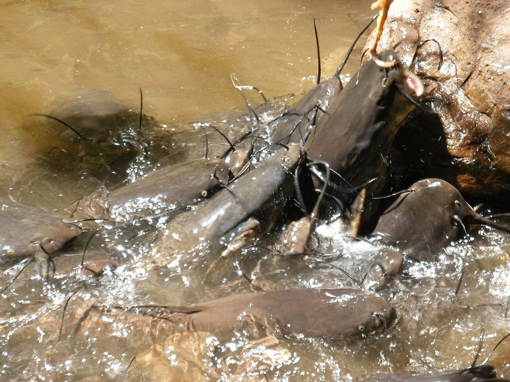

Les Silures Sacrés de Dafra

Un lieu de pèlerinage mystique
Situé à quelques kilomètres de la ville, au creux d'une magnifique falaise naturelle, Dafra est le site mystique le plus célèbre de la région. C'est une source sacrée qui forme le point de départ de la rivière Houet. Selon la légende, le génie protecteur de la ville réside ici sous la forme de silures (poissons-chats) géants.
Rites et traditions séculaires
Des pèlerins venus de tout le pays et d'Afrique de l'Ouest se rendent à Dafra pour demander la santé, la prospérité, la pluie ou le succès. Pour formuler un vœu, la tradition veut que l'on vienne offrir des sacrifices (souvent des poulets ou des dolo, la bière locale) aux silures sacrés. Ces animaux sont totalement intouchables et il est strictement interdit de les pêcher ou de les consommer.
Un espace naturel préservé
Le site offre un spectacle saisissant où la nature sauvage s'allie à la ferveur spirituelle. Le silence respectueux de la falaise n'est rompu que par les incantations des coutumiers et le ballet des vautours qui habitent les parois rocheuses, renforçant l'atmosphère sacrée du lieu.